The people, pups, and kindred spirits who make this world so full of heart
Norbert has never met a stranger. Everywhere he goes, he finds a friend. These are some of the people, kids, pups, and creatures who have shared a moment, a snuggle, or a story with him along the way.

Norbert's little buddy. Gentle meetings and shared afternoons.
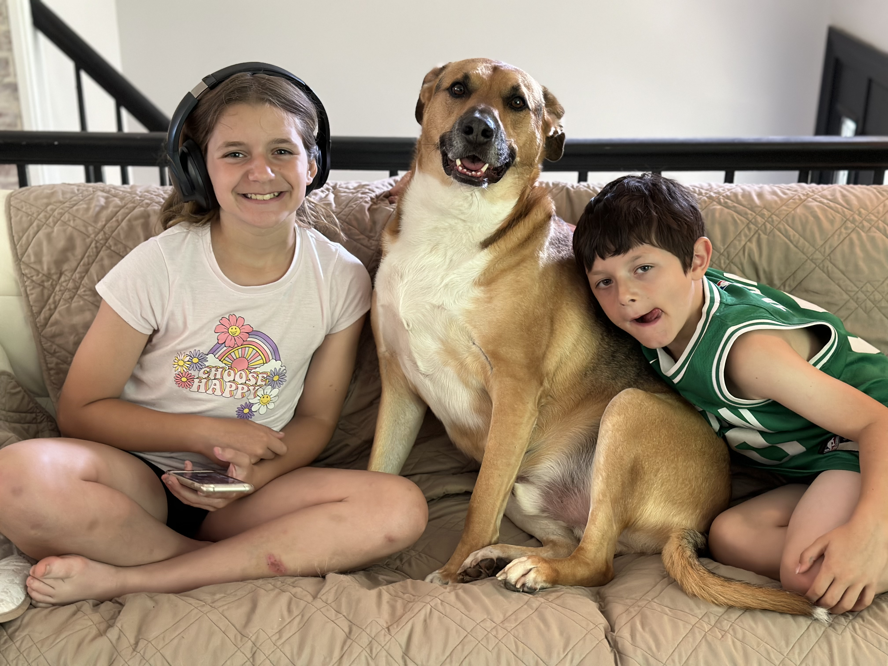
Choose Happy. Norbert agrees.
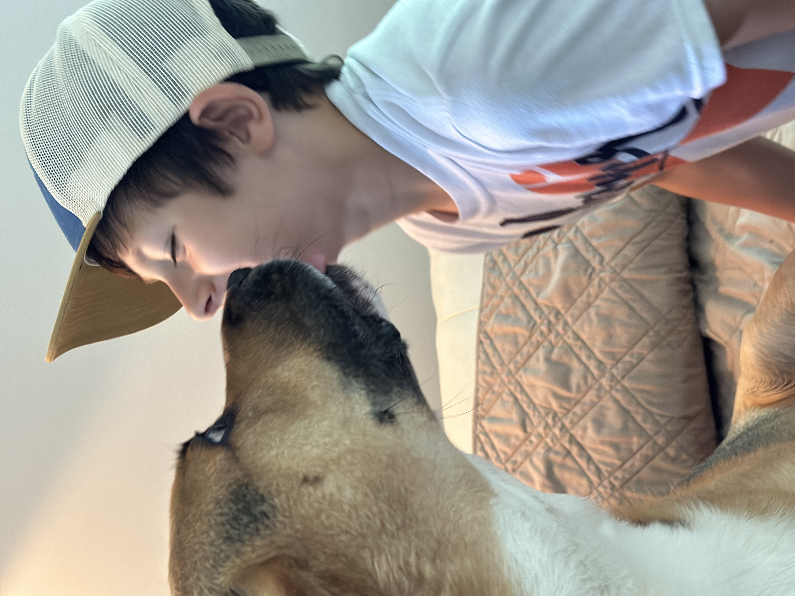
Norbert kisses are non-negotiable.
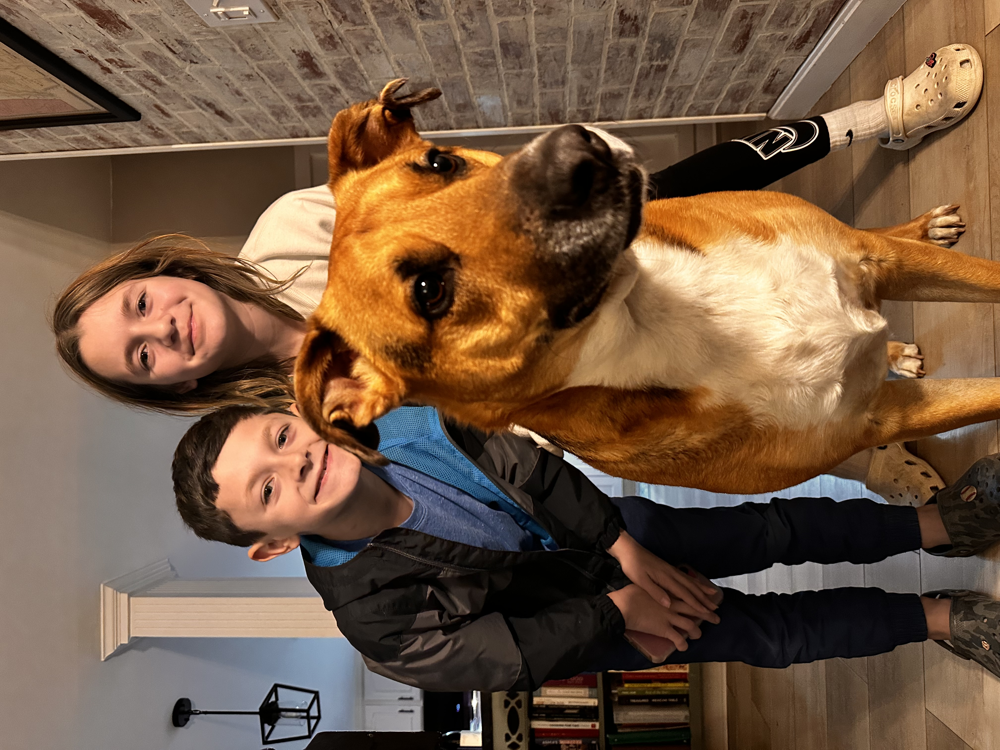
Visiting Norbert. Standing tall with their favorite pup.
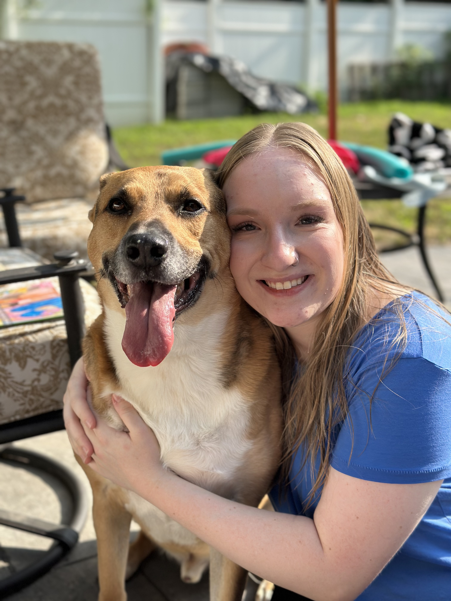
Norbert's first crush at Camp K-9 came to visit. He has never recovered.
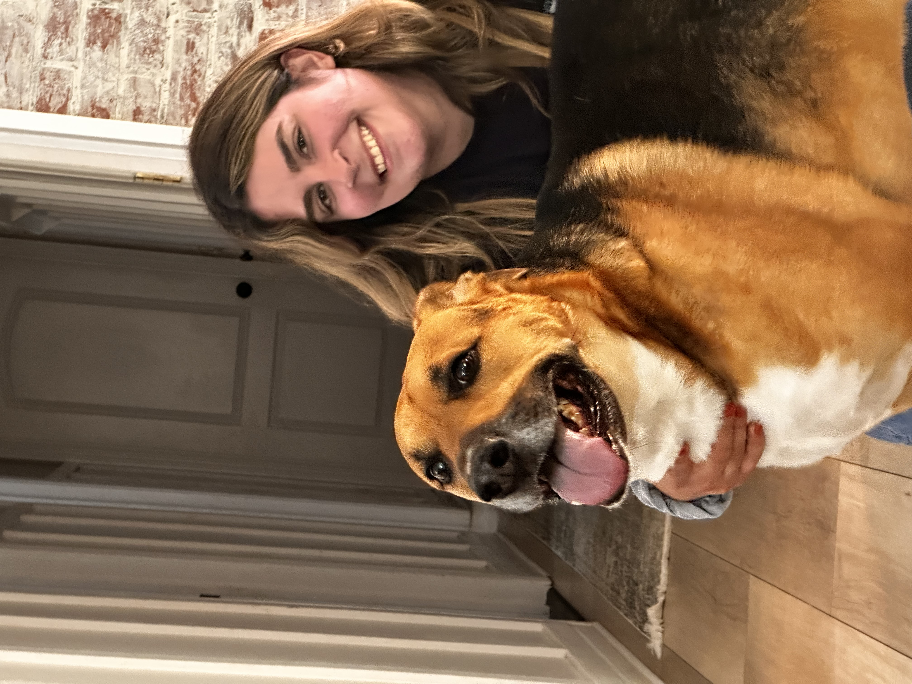
Owner of Floppy Ears Pet Services. Made a house call to trim Norbert's nails when he had kennel cough. That is kindness.
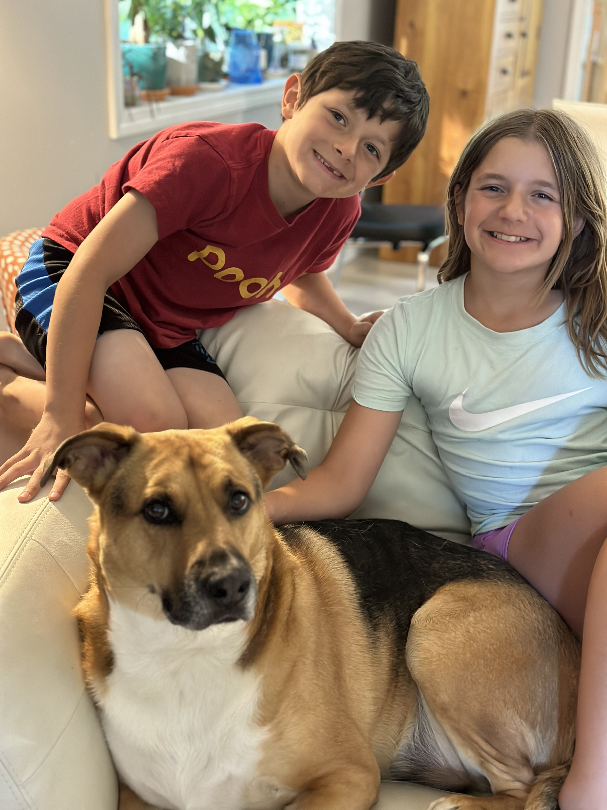
Couch time is the best time.
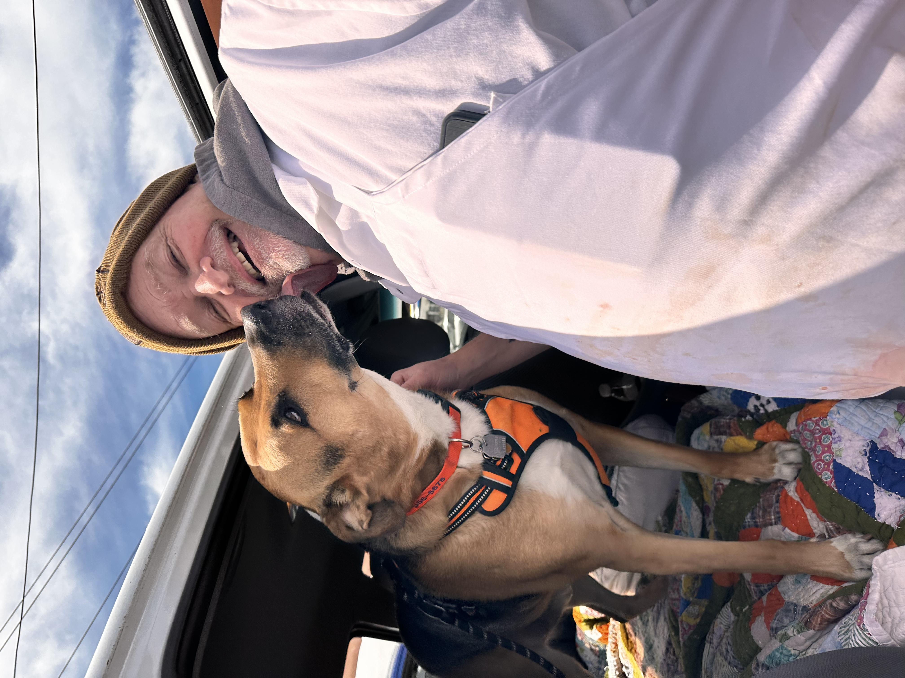
The man behind Norbert's homecooked Mama Sue meals. Nothing but the best for Norbert.
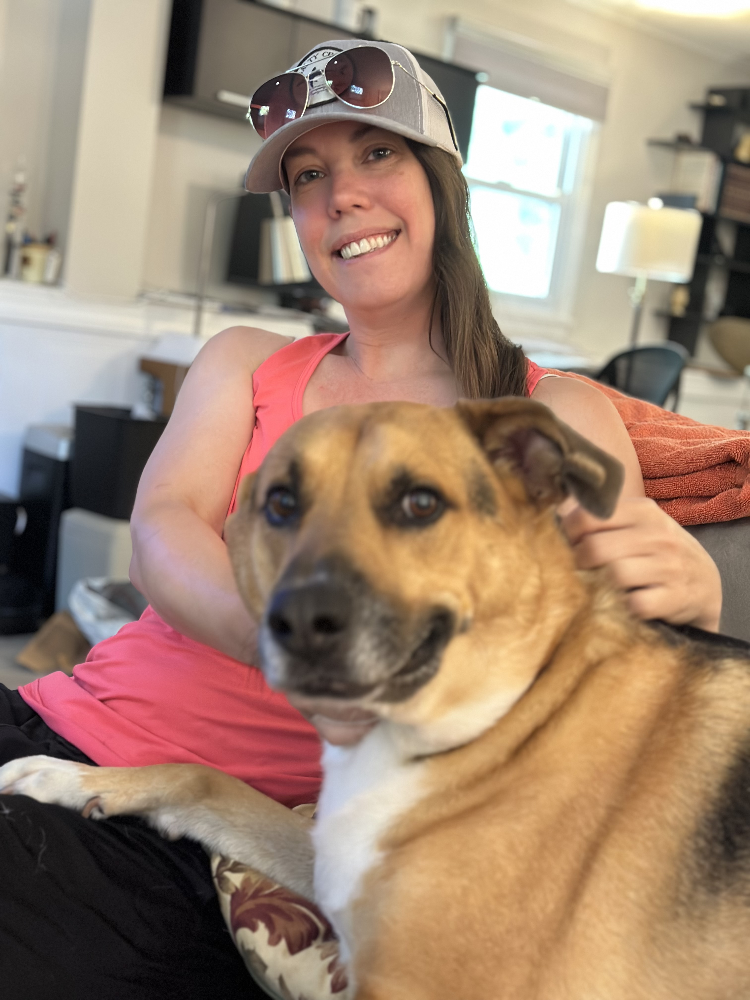
Lazy afternoon, good company.
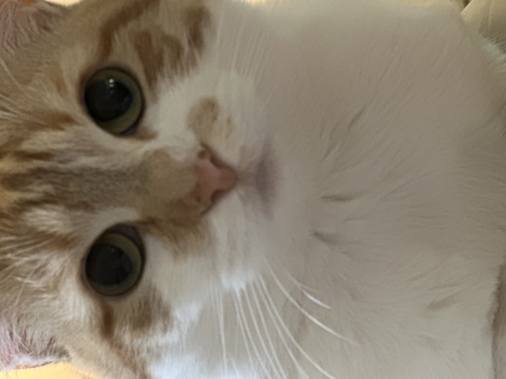
A bossy feline who has no interest in a friendship with Norbert. The feeling is not mutual.
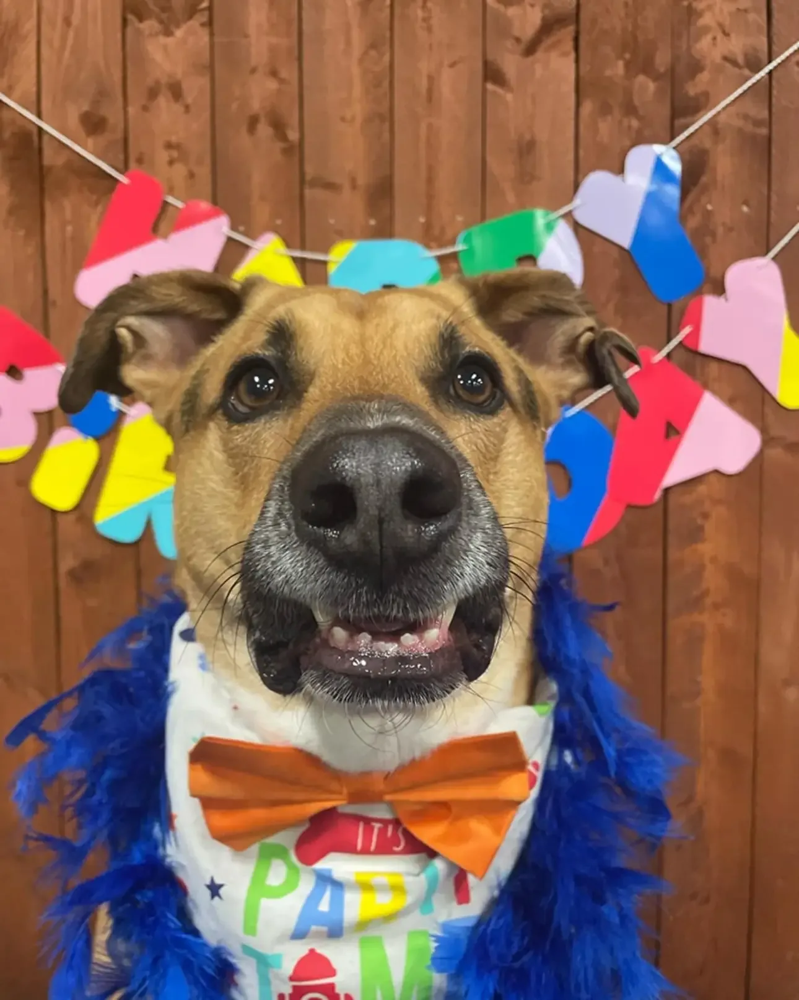
Party time. Bow tie mandatory.
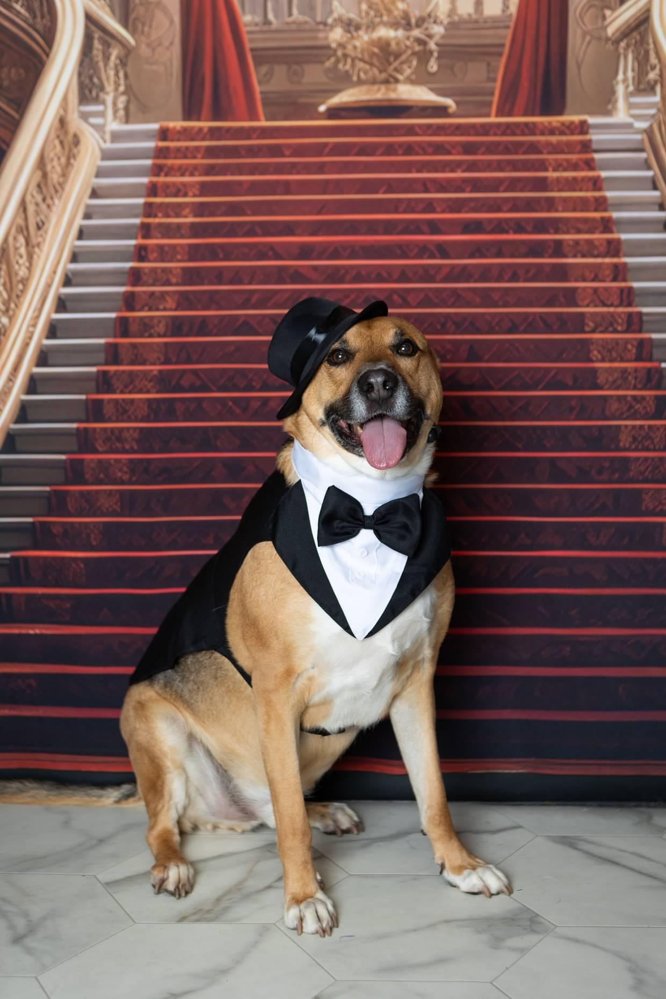
When the occasion calls for black tie.